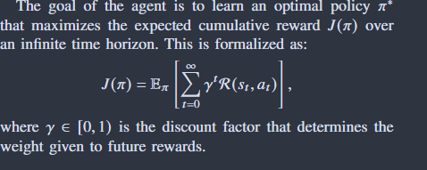
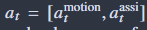
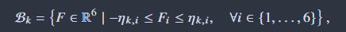
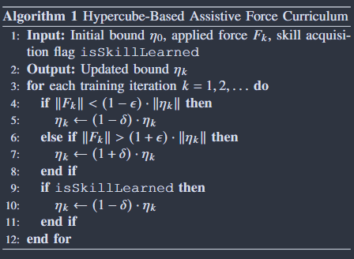
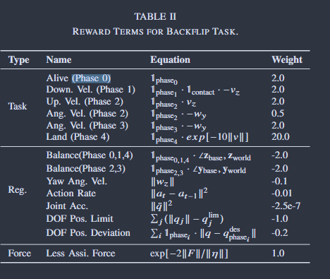

A2CF - dual agent system, state-dependent forces, reduce assistance as proficiency improves
A2CF - dual agent system, state-dependent forces, reduce assistance as proficiency improves
Problem Statement
-POMDP

Action Space

-A2CF
1) Expanded Action Space

2) Assistive Force Curriculum


3) Initial Distribution of Spatial Force - walking skills (xy based)
4) Assistive Force Agent with Privileged Information - Terrain, force bound, robot linear velocity, domain randomization parameters
5) Random Mask of Spatial Force - reduce overly dependence
Training Architecture - AAC
-Motion policy agent: take observation, historical information
-Critic : full state, privileged information + VAE
shared latent representation zt
Task-specific training framework
1) Walking 2) Backflip - phase-based training approach
2) Backflip - phase-based training approach

3) Dancing